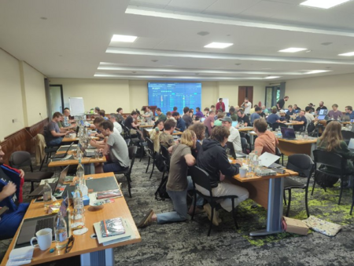
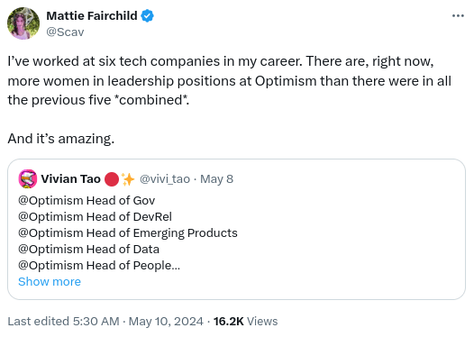
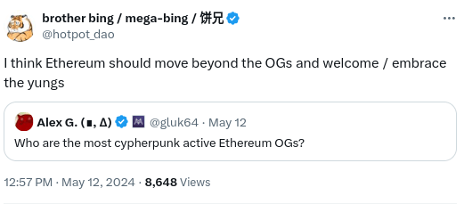
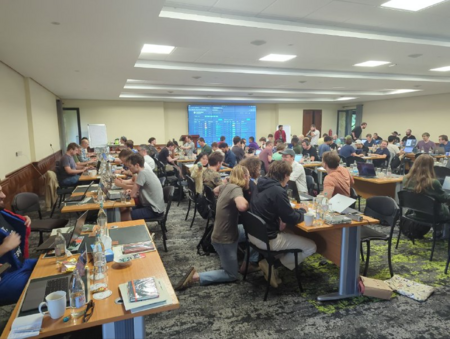
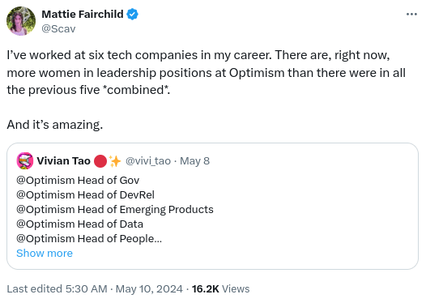
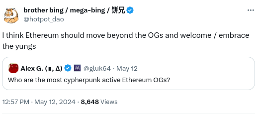

Layer 2s as cultural extensions of Ethereum
2024 May 29
See all posts
Layer 2s as cultural extensions of Ethereum
Special thanks for Abdelhamid Bakhta and Paul Dylan-Ennis for
feedback and discussion.
In my recent
post on the differences between layer 1 and layer 2 scaling, I ended
up roughly coming to the conclusion that the most important differences
between the two approaches are not technical but
organizational (using the word in a similar sense to the field
of "industrial
organization"): it's not about what can get built, but what
will get built, because of how the lines between different
parts of the ecosystem are drawn and how that affects people's
incentives and ability to act. In particular, a layer-2-centric
ecosystem is inherently much more pluralistic, and more naturally leads
to a greater diversity of different approaches to scaling, virtual
machine design, and other technological features.
A key point I made in the previous post is:
Because Ethereum is a layer-2-centric ecosystem, you are free
to go independently build a sub-ecosystem that is yours with your unique
features, and is at the same time a part of a greater
Ethereum.
In this post, I argue that this is true not just with respect
to technology, but also with respect to culture.
Blockchains do not just make unique technical tradeoffs, they also have
unique cultures. On the day after Ethereum and Ethereum Classic
diverged, the two blockchains were exactly the same technologically. But
they were radically different culturally, and this fact helped to shape
the distinct focuses, user bases and even tech stacks that the two
chains have eight years later. The same applies to Ethereum and Bitcoin:
at the beginning, Ethereum was roughly "Bitcoin but with smart
contracts", but the set of differences grew into something much deeper
ten years later.

An old tweet by Kevin Pham comparing Bitcoin and Ethereum
culture, as they were in 2017. Both cultures continue to evolve: since
2017 we have seen the rise
and fall
of the "laser eye" movement (and the simultaneous rise of movements like
Ordinals),
we've seen Ethereum become layer-2 centric, and we've seen both become
much more mainstream. But the two remain different, and it's probably
for the best that it remains so.
What are
some examples of things that culture affects?
Culture has a similar effect to incentives - indeed, culture is
part of incentives. It affects who is attracted to an ecosystem and
who is repelled. It affects what kinds of actions people are motivated
to do, and what kinds of actions people can do. It affects what
is considered legitimate
- both in protocol design, and at the ecosystem and application
layer.
A few particularly important areas that a blockchain's culture has a
great impact on include:
- The type of changes that get made to the protocol -
including quantity, quality and direction
- The protocol's ability to remain open, censorship-resistant
and decentralized
- The ecosystem's ability to attract high-quality protocol
developers and researchers
- The ecosystem's ability to attract high-quality application
developers
- The ecosystem's ability to attract users - both quantity of
users, and the right kinds of users
- The ecosystem's public legitimacy in the eyes of outside
communities and actors
If you really value having a blockchain that remains decentralized,
even at the cost of being slow, you need to look not just at how well
the present-day technology accomplishes those goals, but also at how
well the culture values those goals. If a blockchain's culture does not
value curiosity and openness to new technology, then it may well fail at
both decentralization and speed, because it fails to take up
new technologies like ZK-SNARKs that can get you more of both at the
same time. If a blockchain becomes publicly understood as being "the
casino chain" and nothing else, it becomes hard to get non-casino
applications onboard. Even non-mercenary core protocol developers and
researchers become more difficult to attract. Culture matters, because
culture is at least partially upstream of almost everything else.
The cultures of Ethereum

Ethereum developer interop, Kenya, 2024 May. Ethereum's
core research and development ecosystem is one of Ethereum's
subcultures, though it is also quite diverse in its own right, with substantial
internal disagreements.
The researcher Paul Dylan-Ennis has spent a lot of time exploring and
understanding Ethereum's subcultures. He identifies
three of the main subcultures in Ethereum as follows:
- Cypherpunk: A cypherpunk is committed to open
source development and a certain DIY or punk attitude. In Ethereum's
case, the cypherpunks build the infrastructure and tools, but are hands
off about how they are used, taking a neutral stance. Historically,
cypherpunk had an explicit emphasis on privacy, but in Ethereum it is
not always prioritised, albeit ... a neo-cypherpunk movement called
lunarpunk has emerged to advocate for placing privacy back front and
center
- Regens: Many influential voices within Ethereum are
committed to a regen or regenerative approach to building technology.
Rooted in Vitalik Buterin's interest in politics and social science,
many regens engage in governance experiments designed to reinvigorate,
improve or even replace contemporary institutions. This subculture is
characterized by its experimental nature and interest in public
goods
- Degens: Users driven purely by speculation and
wealth accumulation at all costs, the degens (degenerates). Degens are
financial nihilists who focus on current trends and hype to strike it
lucky and escape the rat race of contemporary neoliberal capitalism.
Degens will often take extraordinary risks, but in an ironic, almost
detached way.
These are not the only three groups that matter, and you can even
contest the extent to which they are coherent groups: institutional
profit-oriented groups and people buying pictures of monkeys are
very very culturally different. "Cypherpunks", as described
here, includes both people interested in end uses like protecting
people's privacy and freedom, and people interested in working with cool
frontier math and cryptography without any strong ideology. But this
categorization is interesting as a first approximation.
One important feature of these three groups in Ethereum is that, in
large part because of Ethereum's flexibility as a developer platform
(and not just a currency), they each have access to some kind of
playing field, where the subculture can engage in action, and not just
talking. One crude approximation is:
In my view, this cultural branching has been a great benefit to
Ethereum. Ethereum core development culture values high-quality thinking
on topics like advanced cryptography, game theory and increasingly
software engineering, it values freedom and independence, it values
cypherpunk ideals as well as blockchainified versions of those
principles (eg. "immutability"), and an idealistic approach focused on
values and soft power over hard power. These values are important and
good; looking at my list of impacts of culture from the previous
section, they make Ethereum very well-positioned on (1), (2), (3) and to
some extent (6). But they are incomplete: for one, the above description
has little emphasis on appealing to application developers, and close to
zero emphasis on appealing to users - the stability-oriented values help
give confidence to people who "use" Ethereum by hodling ETH, but that's
pretty much it. Cultural pluralism is a way of getting out of
this quandary, allowing one subculture to focus on core development
while another focuses on growing the "edges" of the ecosystem.
But this raises a question: are there ways that we can strengthen this
kind of cultural pluralism even further?
Subcultures and layer 2s
This is where I get to what is perhaps the single most
under-appreciated property of layer 2s: for a subculture, a
layer 2 is the ultimate playing field for action. Layer 2s
allow subcultures to emerge that are armed with substantial resources,
and a feedback loop that forces them to learn and adapt in order to be
effective in the real world. Layer 2s have to be effective in multiple
ways: attracting users and application developers, developing
technology, and building global communities.
Perhaps the key property of layer 2s that matters here is that
a layer 2 is simultaneously (i) an ecosystem, and (ii) organized
around building something. Local meetup groups can form their
own ecosystems, and they often have their own unique cultures, but they
have relatively limited resources and execution power. Applications can
have a lot of resources and execution power, but they are
applications: you can use them, but you can't
build on them. Uniswap is great, but there is no concept of
"building on Unsiwap" that is anywhere near as strong as, say, "building
on Polygon".
Some specific ways in which layer 2s can, and do, end up culturally
specializing include:
- More willingness to do user outreach or "business
development": intentionally making efforts to attract specific outside
actors, including individuals, businesses and communities, to
participate in the ecosystem.
- Diversity of values that are emphasized. Is your
community more about "public goods", "good tech", "Ethereum neutrality",
"financial inclusion", "diversity", "scaling", or something else?
Different L2s give different answers.
- Diversity of participants: what kinds of people
does the community attract? Does it particularly emphasize certain
demographic groups? Personality types? Languages? Continents?
Here are a few examples:
Optimism

ZKSync

MegaETH

Starknet

Polygon has found success with partnerships
with mainstream companies, and an increasingly high-quality ZK
ecosystem. Optimism has Base and World
Chain, and features a heavy cultural interest in ideas like retro
funding and not-just-token-based
governance. Metis focuses
on DAOs. Arbitrum has built a brand
around high-quality
developer tools and technology. Scroll
focuses on "preserv[ing] the essence of Ethereum - trust-minimized,
secure and open source". Taiko
emphasizes being "seamless UX", "community aligned", "security-first"
and "based".
In general, every Ethereum layer 2 has a unique "soul": some combination
of Ethereum's culture, together with its own particular twist.
How can this
layer-2-centric approach succeed?
The core value proposition of this layer-2 centric approach to
culture is that it tries to balance the benefits of pluralism and
cooperation, by creating a diverse set of different subcultures that
still share some common values and work together on key common
infrastructure to achieve those values.

Ethereum is trying to take the pluralistic
route.
There have been other attempts at a similar kind of two-level
approach. The most notable one that I can think of is the delegated
proof of stake (DPoS) system in EOS back in the 2017 era. EOS's DPoS
worked by having coin holders vote on which delegates run the chain. The
delegates would be responsible for creating blocks, and coming to
consensus on others' blocks, and they would also get a large amount of
coins from EOS issuance. Delegates ended up doing a lot of community
building in order to attract votes, and many of these "nodes" (eg. EOS
New York, EOS Hong Kong), ended up being recognizable brands in their
own right.
This ended up being an unstable system, because coin
voting is inherently unstable, and because some powerful actors in
the EOS ecosystem turned out to be greedy jerks that siphoned
away lots of money that was raised on behalf of the community for
personal gain. But while it worked, it showed an amazing property:
it created strong highly-autonomous sub-communities that were
still working together toward a common goal.

EOS New York, one of the top EOS block producers, even
ended up writing quite a bit of
open-source infrastructure code.
When this approach works successfully, it also creates a kind of
healthy competition. By default, a community like Ethereum has a natural
tendency to rally around people who have been in the community for a
long time. This has an advantage that it can help preserve the
community's values as the community rapidly grows - it reduces the
chance that Ethereum stops caring about freedom of speech or open source
even if unfavorable winds come in from the outside world. But it also
risks shifting attention away from technical competence and toward
social games, allowing established "OGs" to remain entrenched even if
they underperform, and limiting the culture's ability to renew itself
and evolve. With a healthy "subculture culture", these problems can be
mitigated: entire new subcommunities can rise and fall, and people who
succeed within subcommunities can even start contributing to other
aspects of Ethereum. In short, less legitimacy
by continuity, more legitimacy by performance.
We can also examine the above story to identify possible weak points.
Here are a few that come to mind:
- Collapse into echo chambers: essentially, the same
failure modes that I talked about in my
previous post, but for culture. L2s start acting like separate
universes, with little cross-pollination between them.
- Collapse into monoculture: whether due to shared
human biases or shared economic incentives (or too strong of a unified
Ethereum culture), everyone ends up looking in similar places for what
applications to build and perhaps even what technical choices to make,
and this ends up being the wrong place. Alternatively, either a single
L2 or a small number of L2s gets entrenched, and there is no longer a
functioning mechanism for new people and subcommunities to rise.
- The vector favored by competition is wrong: L2s
that focus on use cases that succeed in some narrow financial sense, but
at the expense of other goals, appear successful, and more and more
communities go in that direction over time.
I do not claim to have perfect answers to these; Ethereum is an
ongoing experiment, and part of what excites me about the ecosystem is
its willingness to tackle difficult problems head-on. Many of the
challenges stem from incentive misalignments; the natural solution to
that is to create better ecosystem-wide incentives for collaboration.
The idea I mentioned in my
previous post, of creating a "Basic Infrastructure Guild" to
complement Protocol Guild is one option. Another option is to explicitly
subsidize projects that multiple L2s choose to collaborate on (ie.
something vaguely like quadratic
funding, but focusing on bridging ecosystems rather than bridging
individuals). There is a lot of value in trying to expand on these
ideas, and keep working to make the best of Ethereum's unique advantage
as a pluralistic ecosystem.
Layer 2s as cultural extensions of Ethereum
2024 May 29 See all postsSpecial thanks for Abdelhamid Bakhta and Paul Dylan-Ennis for feedback and discussion.
In my recent post on the differences between layer 1 and layer 2 scaling, I ended up roughly coming to the conclusion that the most important differences between the two approaches are not technical but organizational (using the word in a similar sense to the field of "industrial organization"): it's not about what can get built, but what will get built, because of how the lines between different parts of the ecosystem are drawn and how that affects people's incentives and ability to act. In particular, a layer-2-centric ecosystem is inherently much more pluralistic, and more naturally leads to a greater diversity of different approaches to scaling, virtual machine design, and other technological features.
A key point I made in the previous post is:
In this post, I argue that this is true not just with respect to technology, but also with respect to culture. Blockchains do not just make unique technical tradeoffs, they also have unique cultures. On the day after Ethereum and Ethereum Classic diverged, the two blockchains were exactly the same technologically. But they were radically different culturally, and this fact helped to shape the distinct focuses, user bases and even tech stacks that the two chains have eight years later. The same applies to Ethereum and Bitcoin: at the beginning, Ethereum was roughly "Bitcoin but with smart contracts", but the set of differences grew into something much deeper ten years later.
An old tweet by Kevin Pham comparing Bitcoin and Ethereum culture, as they were in 2017. Both cultures continue to evolve: since 2017 we have seen the rise and fall of the "laser eye" movement (and the simultaneous rise of movements like Ordinals), we've seen Ethereum become layer-2 centric, and we've seen both become much more mainstream. But the two remain different, and it's probably for the best that it remains so.
What are some examples of things that culture affects?
Culture has a similar effect to incentives - indeed, culture is part of incentives. It affects who is attracted to an ecosystem and who is repelled. It affects what kinds of actions people are motivated to do, and what kinds of actions people can do. It affects what is considered legitimate - both in protocol design, and at the ecosystem and application layer.
A few particularly important areas that a blockchain's culture has a great impact on include:
If you really value having a blockchain that remains decentralized, even at the cost of being slow, you need to look not just at how well the present-day technology accomplishes those goals, but also at how well the culture values those goals. If a blockchain's culture does not value curiosity and openness to new technology, then it may well fail at both decentralization and speed, because it fails to take up new technologies like ZK-SNARKs that can get you more of both at the same time. If a blockchain becomes publicly understood as being "the casino chain" and nothing else, it becomes hard to get non-casino applications onboard. Even non-mercenary core protocol developers and researchers become more difficult to attract. Culture matters, because culture is at least partially upstream of almost everything else.
The cultures of Ethereum

Ethereum developer interop, Kenya, 2024 May. Ethereum's core research and development ecosystem is one of Ethereum's subcultures, though it is also quite diverse in its own right, with substantial internal disagreements.
The researcher Paul Dylan-Ennis has spent a lot of time exploring and understanding Ethereum's subcultures. He identifies three of the main subcultures in Ethereum as follows:
These are not the only three groups that matter, and you can even contest the extent to which they are coherent groups: institutional profit-oriented groups and people buying pictures of monkeys are very very culturally different. "Cypherpunks", as described here, includes both people interested in end uses like protecting people's privacy and freedom, and people interested in working with cool frontier math and cryptography without any strong ideology. But this categorization is interesting as a first approximation.
One important feature of these three groups in Ethereum is that, in large part because of Ethereum's flexibility as a developer platform (and not just a currency), they each have access to some kind of playing field, where the subculture can engage in action, and not just talking. One crude approximation is:
In my view, this cultural branching has been a great benefit to Ethereum. Ethereum core development culture values high-quality thinking on topics like advanced cryptography, game theory and increasingly software engineering, it values freedom and independence, it values cypherpunk ideals as well as blockchainified versions of those principles (eg. "immutability"), and an idealistic approach focused on values and soft power over hard power. These values are important and good; looking at my list of impacts of culture from the previous section, they make Ethereum very well-positioned on (1), (2), (3) and to some extent (6). But they are incomplete: for one, the above description has little emphasis on appealing to application developers, and close to zero emphasis on appealing to users - the stability-oriented values help give confidence to people who "use" Ethereum by hodling ETH, but that's pretty much it. Cultural pluralism is a way of getting out of this quandary, allowing one subculture to focus on core development while another focuses on growing the "edges" of the ecosystem. But this raises a question: are there ways that we can strengthen this kind of cultural pluralism even further?
Subcultures and layer 2s
This is where I get to what is perhaps the single most under-appreciated property of layer 2s: for a subculture, a layer 2 is the ultimate playing field for action. Layer 2s allow subcultures to emerge that are armed with substantial resources, and a feedback loop that forces them to learn and adapt in order to be effective in the real world. Layer 2s have to be effective in multiple ways: attracting users and application developers, developing technology, and building global communities.
Perhaps the key property of layer 2s that matters here is that a layer 2 is simultaneously (i) an ecosystem, and (ii) organized around building something. Local meetup groups can form their own ecosystems, and they often have their own unique cultures, but they have relatively limited resources and execution power. Applications can have a lot of resources and execution power, but they are applications: you can use them, but you can't build on them. Uniswap is great, but there is no concept of "building on Unsiwap" that is anywhere near as strong as, say, "building on Polygon".
Some specific ways in which layer 2s can, and do, end up culturally specializing include:
Here are a few examples:
Optimism

ZKSync
MegaETH

Starknet
Polygon has found success with partnerships with mainstream companies, and an increasingly high-quality ZK ecosystem. Optimism has Base and World Chain, and features a heavy cultural interest in ideas like retro funding and not-just-token-based governance. Metis focuses on DAOs. Arbitrum has built a brand around high-quality developer tools and technology. Scroll focuses on "preserv[ing] the essence of Ethereum - trust-minimized, secure and open source". Taiko emphasizes being "seamless UX", "community aligned", "security-first" and "based". In general, every Ethereum layer 2 has a unique "soul": some combination of Ethereum's culture, together with its own particular twist.
How can this layer-2-centric approach succeed?
The core value proposition of this layer-2 centric approach to culture is that it tries to balance the benefits of pluralism and cooperation, by creating a diverse set of different subcultures that still share some common values and work together on key common infrastructure to achieve those values.
Ethereum is trying to take the pluralistic route.
There have been other attempts at a similar kind of two-level approach. The most notable one that I can think of is the delegated proof of stake (DPoS) system in EOS back in the 2017 era. EOS's DPoS worked by having coin holders vote on which delegates run the chain. The delegates would be responsible for creating blocks, and coming to consensus on others' blocks, and they would also get a large amount of coins from EOS issuance. Delegates ended up doing a lot of community building in order to attract votes, and many of these "nodes" (eg. EOS New York, EOS Hong Kong), ended up being recognizable brands in their own right.
This ended up being an unstable system, because coin voting is inherently unstable, and because some powerful actors in the EOS ecosystem turned out to be greedy jerks that siphoned away lots of money that was raised on behalf of the community for personal gain. But while it worked, it showed an amazing property: it created strong highly-autonomous sub-communities that were still working together toward a common goal.
EOS New York, one of the top EOS block producers, even ended up writing quite a bit of open-source infrastructure code.
When this approach works successfully, it also creates a kind of healthy competition. By default, a community like Ethereum has a natural tendency to rally around people who have been in the community for a long time. This has an advantage that it can help preserve the community's values as the community rapidly grows - it reduces the chance that Ethereum stops caring about freedom of speech or open source even if unfavorable winds come in from the outside world. But it also risks shifting attention away from technical competence and toward social games, allowing established "OGs" to remain entrenched even if they underperform, and limiting the culture's ability to renew itself and evolve. With a healthy "subculture culture", these problems can be mitigated: entire new subcommunities can rise and fall, and people who succeed within subcommunities can even start contributing to other aspects of Ethereum. In short, less legitimacy by continuity, more legitimacy by performance.
We can also examine the above story to identify possible weak points. Here are a few that come to mind:
I do not claim to have perfect answers to these; Ethereum is an ongoing experiment, and part of what excites me about the ecosystem is its willingness to tackle difficult problems head-on. Many of the challenges stem from incentive misalignments; the natural solution to that is to create better ecosystem-wide incentives for collaboration. The idea I mentioned in my previous post, of creating a "Basic Infrastructure Guild" to complement Protocol Guild is one option. Another option is to explicitly subsidize projects that multiple L2s choose to collaborate on (ie. something vaguely like quadratic funding, but focusing on bridging ecosystems rather than bridging individuals). There is a lot of value in trying to expand on these ideas, and keep working to make the best of Ethereum's unique advantage as a pluralistic ecosystem.